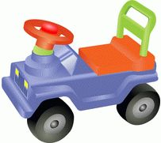
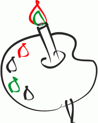

Мне купили паровозик,
Сразу 2 вагона возит.
Я включу его, и он
За собой везёт вагон.
Вот бы мне в нём пракатиться,
Только жаль - не поместиться.

За рулём сиджу довольный —
Ездить просто и легко!
Только руль чуть-чуть огромный
И пелали далеко.
Мне купили паровозик,
Сразу 2 вагона возит.
Я включу его, и он
За собой везёт вагон.
Вот бы мне в нём пракатиться,
Только жаль - не поместиться.

Нарисую я в альботе
Голубое море,
Белый парус над волною
Бьётся на просторе.